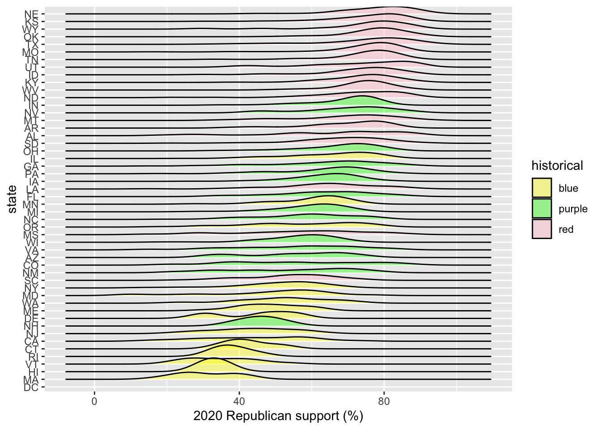

# Load dataelections <-read.csv("https://mac-stat.github.io/data/election_2020_county.csv")library(tidyverse)#View(elections)# Check it outhead(elections)
state_name state_abbr historical county_name county_fips total_votes_20
1 Alabama AL red Autauga County 1001 27770
2 Alabama AL red Baldwin County 1003 109679
3 Alabama AL red Barbour County 1005 10518
4 Alabama AL red Bibb County 1007 9595
5 Alabama AL red Blount County 1009 27588
6 Alabama AL red Bullock County 1011 4613
repub_pct_20 dem_pct_20 winner_20 total_votes_16 repub_pct_16 dem_pct_16
1 71.44 27.02 repub 24661 73.44 23.96
2 76.17 22.41 repub 94090 77.35 19.57
3 53.45 45.79 repub 10390 52.27 46.66
4 78.43 20.70 repub 8748 76.97 21.42
5 89.57 9.57 repub 25384 89.85 8.47
6 24.84 74.70 dem 4701 24.23 75.09
winner_16 total_votes_12 repub_pct_12 dem_pct_12 winner_12 total_population
1 repub 23909 72.63 26.58 repub 54907
2 repub 84988 77.39 21.57 repub 187114
3 repub 11459 48.34 51.25 dem 27321
4 repub 8391 73.07 26.22 repub 22754
5 repub 23980 86.49 12.35 repub 57623
6 dem 5318 23.51 76.31 dem 10746
percent_white percent_black percent_asian percent_hispanic per_capita_income
1 76 18 1 2 24571
2 83 9 1 4 26766
3 46 46 0 5 16829
4 75 22 0 2 17427
5 88 1 0 8 20730
6 22 71 0 6 18628
median_rent median_age
1 668 37.5
2 693 41.5
3 382 38.3
4 351 39.4
5 403 39.6
6 276 39.6
Code
ggplot(elections, aes(x = repub_pct_16, y = repub_pct_20) ) +geom_point()
Code
# Set up the plotting frame# How does this differ than the frame for our histogram of repub_pct_20 alone?# In a histogram the y axis is a count.ggplot(elections, aes(y = repub_pct_20, x = repub_pct_16))
# Add a layer of points for each county# Take note of the geom!ggplot(elections, aes(y = repub_pct_20, x = repub_pct_16)) +geom_point()
Code
# Change the shape of the points# What happens if you change the shape to another number? Creates different kind of shapesggplot(elections, aes(y = repub_pct_20, x = repub_pct_16)) +geom_point(shape =10)
Code
# YOU TRY: Modify the code to make the points "orange"# NOTE: Try to anticipate if "color" or "fill" will be useful here. Then try both.ggplot(elections, aes(y = repub_pct_20, x = repub_pct_16)) +geom_point(color ="orange", fill ="black")
Code
# Add a layer that represents each county by the state it's in# Take note of the geom and the info it needs to run!ggplot(elections, aes(y = repub_pct_20, x = repub_pct_16)) +geom_text(aes(label = state_abbr))
7.4 Exercise 3
7.4.0.1 Summarize the relationship between the Republican support in 2020 and 2016. Be sure to comment on:
the strength of the relationship (weak/moderate/strong) - STRONG
the direction of the relationship (positive/negative) - POSITIVE
outliers (in what state do counties deviate from the national trend? Any ideas why this might be the case?) - TX because they may have a big county that votes for democrats that changes the mean votes for republicants, i.e. more counties started voting for republican
Exercise 4
Code
ggplot(elections, aes(y = repub_pct_20, x = repub_pct_16)) +geom_point() +geom_smooth()
Code
# Construct a new plot that contains the model smooth but does not include the individual point glyphsggplot(elections, aes(y = repub_pct_20, x = repub_pct_16)) +geom_smooth()
Code
# By default, geom_smooth() adds a smooth, localized model line. To examine the “best” linear model, we can specify method = "lm". It’s pretty similar in this example!ggplot(elections, aes(y = repub_pct_20, x = repub_pct_16)) +geom_point() +geom_smooth(method ="lm")
7.5 Exercise 5
Code
# Scatterplot of repub_pct_20 vs median_rentggplot(elections, aes(y = repub_pct_20, x = median_age)) +geom_point()
Code
# Has a moderate positive correlation# Scatterplot of repub_pct_20 vs median_ageggplot(elections, aes(y = repub_pct_20, x = median_rent)) +geom_point()
Code
# Has a weak negative correlation#Of the 2, median_rent is a better predictor.
7.6 Exercise 6
Code
ggplot(elections, aes(y = repub_pct_20, x = historical)) +geom_point()
Code
# This is not a good plot because it does not show any relationship and points are plotted against each other.
# Name two "bad" things about this plot - density plots are not complete and the color code does not matchggplot(elections, aes(x = repub_pct_20, fill = historical)) +geom_density()
Code
# What does scale_fill_man - scale_fill_manual determines what colors to use for the fill categoriesggplot(elections, aes(x = repub_pct_20, fill = historical)) +geom_density() +scale_fill_manual(values =c("blue", "purple", "red"))
Code
# What does alpha = 0.5 do? *make it slightly transparent*# Play around with different values of alpha, between 0 and 1ggplot(elections, aes(x = repub_pct_20, fill = historical)) +geom_density(alpha =0.5) +scale_fill_manual(values =c("blue", "purple", "red"))
Code
# What does facet_wrap do?! - *presents the density plots in separate graphs*ggplot(elections, aes(x = repub_pct_20, fill = historical)) +geom_density() +scale_fill_manual(values =c("blue", "purple", "red")) +facet_wrap(~ historical)
Code
# Let's try a similar grouping strategy with a histogram instead of density plot.# Why is this terrible? - *does not show everything in each categories*ggplot(elections, aes(x = repub_pct_20, fill = historical)) +geom_histogram(color ="white") +scale_fill_manual(values =c("blue", "purple", "red"))
7.10 Exercise 10
We’ve now learned 3 (of many) ways to visualize the relationship between a quantitative and categorical variable: side-by-side violins, boxplots, and density plots.
Which do you like best? Density Plots
What is one pro of density plots relative to boxplots? Shows the beginning and end, has better visualization of data distribution
What is one con of density plots relative to boxplots? They can be less clear when comparing multiple distributions at once
7.11 Exercise 11
Code
# Plot 1: adjust this to recreate the top plotggplot(elections, aes(x = historical)) +geom_bar()
# Plot 2: adjust this to recreate the bottom plotggplot(elections, aes(x = winner_20)) +geom_bar()
7.12 Exercise 12
Code
# A stacked bar plot# How are the "historical" and "winner_20" variables mapped to the plot, i.e. what roles do they play? Historical is X-axis while winner_20 is the scaleggplot(elections, aes(x = historical, fill = winner_20)) +geom_bar()
Code
# A faceted bar plotggplot(elections, aes(x = winner_20)) +geom_bar() +facet_wrap(~ historical)
Code
# A side-by-side bar plot# Note the new argument to geom_barggplot(elections, aes(x = historical, fill = winner_20)) +geom_bar(position ="dodge")
Code
# A proportional bar plot# Note the new argument to geom_barggplot(elections, aes(x = historical, fill = winner_20)) +geom_bar(position ="fill")
Name one pro and one con of using the “proportional bar plot” instead of one of the other three options. - Pro: Easy to compare the two categories - Con: Cannot tell how many points fall into each category
Favourite graph is side-by-side bar plot because its easy to interpret.
# Install ggridges packagelibrary(ggridges)# Make our first joy plot# THINK: What DON'T you like about this? Its too crowded and not easy to readggplot(elections, aes(x = repub_pct_20, y = state_abbr)) +geom_density_ridges()
Code
# Let's put the states in order by Republican support, not alphabet# How do you think fct_reorder works? We'll learn about this later in the semester.ggplot(elections, aes(x = repub_pct_20, y =fct_reorder(state_abbr, repub_pct_20))) +geom_density_ridges(alpha =0.5)
Code
# YOUR TURN: color/fill the ridges according to a state's historical voting patterns # and add meaningful axis labelsggplot(elections, aes(x = repub_pct_20, y =fct_reorder(state_abbr, repub_pct_20), fill = historical)) +geom_density_ridges(alpha =0.4) +labs(y ="state", x ="2020 Republican support (%)") +scale_fill_manual(values =c("yellow", "green", "pink"))

7.15 Optional Exercise 2: Total Outcomes by State
Code
elections_by_state <-read.csv("https://mac-stat.github.io/data/election_2020_by_state.csv")ggplot(elections_by_state, aes(y = repub_pct_20, x = repub_pct_16)) +geom_point()
Code
# Create a "scatterplot" of state_abbr (y-axis) by 2020 Republican support on the x-axis# Color the points redggplot(elections_by_state, aes(x = repub_pct_20, y = state_abbr)) +geom_point(color ="red")
Code
# Reorder the states in terms of their 2020 Republican support (not alphabet)ggplot(elections_by_state, aes(x = repub_pct_20, y =fct_reorder(state_abbr, repub_pct_20))) +geom_point(color ="red")
Code
# Add ANOTHER layer of points for the 2016 outcomes# What info does this new geom_point() layer need to run?ggplot(elections_by_state, aes(x = repub_pct_20, y =fct_reorder(state_abbr, repub_pct_20))) +geom_point(color ="red") +geom_point(aes(x = repub_pct_16, y = state_abbr))
Source Code
---title: "Bivariate Viz"---## Exercise 0```{r}# Load dataelections <-read.csv("https://mac-stat.github.io/data/election_2020_county.csv")library(tidyverse)#View(elections)# Check it outhead(elections)``````{r}ggplot(elections, aes(x = repub_pct_16, y = repub_pct_20) ) +geom_point() ``````{r}# Set up the plotting frame# How does this differ than the frame for our histogram of repub_pct_20 alone?# In a histogram the y axis is a count.ggplot(elections, aes(y = repub_pct_20, x = repub_pct_16))```## Exercise 1```{r}ggplot(elections, aes(x = repub_pct_20)) +geom_histogram()```## Exercise 2```{r}# Add a layer of points for each county# Take note of the geom!ggplot(elections, aes(y = repub_pct_20, x = repub_pct_16)) +geom_point()``````{r}# Change the shape of the points# What happens if you change the shape to another number? Creates different kind of shapesggplot(elections, aes(y = repub_pct_20, x = repub_pct_16)) +geom_point(shape =10)``````{r}# YOU TRY: Modify the code to make the points "orange"# NOTE: Try to anticipate if "color" or "fill" will be useful here. Then try both.ggplot(elections, aes(y = repub_pct_20, x = repub_pct_16)) +geom_point(color ="orange", fill ="black")``````{r}# Add a layer that represents each county by the state it's in# Take note of the geom and the info it needs to run!ggplot(elections, aes(y = repub_pct_20, x = repub_pct_16)) +geom_text(aes(label = state_abbr))```## Exercise 3#### Summarize the relationship between the Republican support in 2020 and 2016. Be sure to comment on:the strength of the relationship (weak/moderate/strong) - **STRONG**the direction of the relationship (positive/negative) - **POSITIVE**outliers (in what state do counties deviate from the national trend? Any ideas why this might be the case?) - **TX because they may have a big county that votes for democrats that changes the mean votes for republicants, i.e. more counties started voting for republican**Exercise 4```{r}ggplot(elections, aes(y = repub_pct_20, x = repub_pct_16)) +geom_point() +geom_smooth()``````{r}# Construct a new plot that contains the model smooth but does not include the individual point glyphsggplot(elections, aes(y = repub_pct_20, x = repub_pct_16)) +geom_smooth()``````{r}# By default, geom_smooth() adds a smooth, localized model line. To examine the “best” linear model, we can specify method = "lm". It’s pretty similar in this example!ggplot(elections, aes(y = repub_pct_20, x = repub_pct_16)) +geom_point() +geom_smooth(method ="lm")```## Exercise 5```{r}# Scatterplot of repub_pct_20 vs median_rentggplot(elections, aes(y = repub_pct_20, x = median_age)) +geom_point()# Has a moderate positive correlation# Scatterplot of repub_pct_20 vs median_ageggplot(elections, aes(y = repub_pct_20, x = median_rent)) +geom_point()# Has a weak negative correlation#Of the 2, median_rent is a better predictor.```## Exercise 6```{r}ggplot(elections, aes(y = repub_pct_20, x = historical)) +geom_point()# This is not a good plot because it does not show any relationship and points are plotted against each other.```## Exercise 7```{r}# Side-by-side violin plotsggplot(elections, aes(y = repub_pct_20, x = historical)) +geom_violin()``````{r}# Side-by-side boxplots (defined below)ggplot(elections, aes(y = repub_pct_20, x = historical)) +geom_boxplot()```Summarize what you’ve learned about the 2020 Republican county-level support within and between red/purple/blue states.- *There is high support in descending order from red to purple to blue states*## Exercise 8```{r}ggplot(elections, aes(x = repub_pct_20)) +geom_density()```## Exercise 9```{r}# Name two "bad" things about this plot - density plots are not complete and the color code does not matchggplot(elections, aes(x = repub_pct_20, fill = historical)) +geom_density()``````{r}# What does scale_fill_man - scale_fill_manual determines what colors to use for the fill categoriesggplot(elections, aes(x = repub_pct_20, fill = historical)) +geom_density() +scale_fill_manual(values =c("blue", "purple", "red"))``````{r}# What does alpha = 0.5 do? *make it slightly transparent*# Play around with different values of alpha, between 0 and 1ggplot(elections, aes(x = repub_pct_20, fill = historical)) +geom_density(alpha =0.5) +scale_fill_manual(values =c("blue", "purple", "red"))``````{r}# What does facet_wrap do?! - *presents the density plots in separate graphs*ggplot(elections, aes(x = repub_pct_20, fill = historical)) +geom_density() +scale_fill_manual(values =c("blue", "purple", "red")) +facet_wrap(~ historical)``````{r}# Let's try a similar grouping strategy with a histogram instead of density plot.# Why is this terrible? - *does not show everything in each categories*ggplot(elections, aes(x = repub_pct_20, fill = historical)) +geom_histogram(color ="white") +scale_fill_manual(values =c("blue", "purple", "red"))```## Exercise 10We’ve now learned 3 (of many) ways to visualize the relationship between a quantitative and categorical variable: side-by-side violins, boxplots, and density plots.Which do you like best?*Density Plots*What is one pro of density plots relative to boxplots?*Shows the beginning and end, has better visualization of data distribution*What is one con of density plots relative to boxplots?*They can be less clear when comparing multiple distributions at once*## Exercise 11```{r}# Plot 1: adjust this to recreate the top plotggplot(elections, aes(x = historical)) +geom_bar()ggplot(elections, aes(x = historical, fill = winner_20)) +geom_bar(color ="white") +scale_fill_manual(values =c("blue", "red"))``````{r}# Plot 2: adjust this to recreate the bottom plotggplot(elections, aes(x = winner_20)) +geom_bar()```## Exercise 12```{r}# A stacked bar plot# How are the "historical" and "winner_20" variables mapped to the plot, i.e. what roles do they play? Historical is X-axis while winner_20 is the scaleggplot(elections, aes(x = historical, fill = winner_20)) +geom_bar()``````{r}# A faceted bar plotggplot(elections, aes(x = winner_20)) +geom_bar() +facet_wrap(~ historical)``````{r}# A side-by-side bar plot# Note the new argument to geom_barggplot(elections, aes(x = historical, fill = winner_20)) +geom_bar(position ="dodge")``````{r}# A proportional bar plot# Note the new argument to geom_barggplot(elections, aes(x = historical, fill = winner_20)) +geom_bar(position ="fill")```Name one pro and one con of using the “proportional bar plot” instead of one of the other three options.- Pro: Easy to compare the two categories - Con: Cannot tell how many points fall into each categoryFavourite graph is side-by-side bar plot because its easy to interpret.## Exercise 13```{r}weather <-read.csv("https://mac-stat.github.io/data/weather_3_locations.csv")``````{r}# How do 3pm temperatures (temp3pm) differ by location``````{r}# How might we predict the 3pm temperature (temp3pm) by the 9am temperature (temp9am)?``````{r}# How do the number of rainy days (raintoday) differ by location?```## Optional Exercise 1: Many Categories```{r}ggplot(elections, aes(x = repub_pct_20, fill = state_abbr)) +geom_density(alpha =0.5)# Reflect on why this is bad. ``````{r}ggplot(elections, aes(x = repub_pct_20)) +geom_density(alpha =0.5) +facet_wrap(~ state_abbr)# This is also bad``````{r}# Install ggridges packagelibrary(ggridges)# Make our first joy plot# THINK: What DON'T you like about this? Its too crowded and not easy to readggplot(elections, aes(x = repub_pct_20, y = state_abbr)) +geom_density_ridges()``````{r}# Let's put the states in order by Republican support, not alphabet# How do you think fct_reorder works? We'll learn about this later in the semester.ggplot(elections, aes(x = repub_pct_20, y =fct_reorder(state_abbr, repub_pct_20))) +geom_density_ridges(alpha =0.5)``````{r}# YOUR TURN: color/fill the ridges according to a state's historical voting patterns # and add meaningful axis labelsggplot(elections, aes(x = repub_pct_20, y =fct_reorder(state_abbr, repub_pct_20), fill = historical)) +geom_density_ridges(alpha =0.4) +labs(y ="state", x ="2020 Republican support (%)") +scale_fill_manual(values =c("yellow", "green", "pink"))```## Optional Exercise 2: Total Outcomes by State```{r}elections_by_state <-read.csv("https://mac-stat.github.io/data/election_2020_by_state.csv")ggplot(elections_by_state, aes(y = repub_pct_20, x = repub_pct_16)) +geom_point()``````{r}# Create a "scatterplot" of state_abbr (y-axis) by 2020 Republican support on the x-axis# Color the points redggplot(elections_by_state, aes(x = repub_pct_20, y = state_abbr)) +geom_point(color ="red")``````{r}# Reorder the states in terms of their 2020 Republican support (not alphabet)ggplot(elections_by_state, aes(x = repub_pct_20, y =fct_reorder(state_abbr, repub_pct_20))) +geom_point(color ="red")``````{r}# Add ANOTHER layer of points for the 2016 outcomes# What info does this new geom_point() layer need to run?ggplot(elections_by_state, aes(x = repub_pct_20, y =fct_reorder(state_abbr, repub_pct_20))) +geom_point(color ="red") +geom_point(aes(x = repub_pct_16, y = state_abbr))```